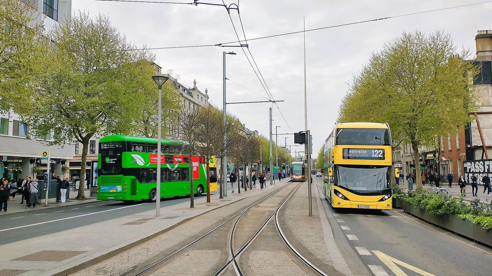

Race, St. Patrick's Day, Dublin

Behind
Best +0:01
371W
Target 418 W-47 W
- Cadence
- 87rpm
- Heart
- 140bpm
- Speed
- 26.5km/h
Warm-up1 of 17
4:43
Next: · 0:30 at level 24
+0.2%
0 m climbed
0.12 km
18
Resistance / 32
Solo races your best-time ghost: position reads Ahead or Behind, and solo alone gets a Pause button. Frozen at 0:17.